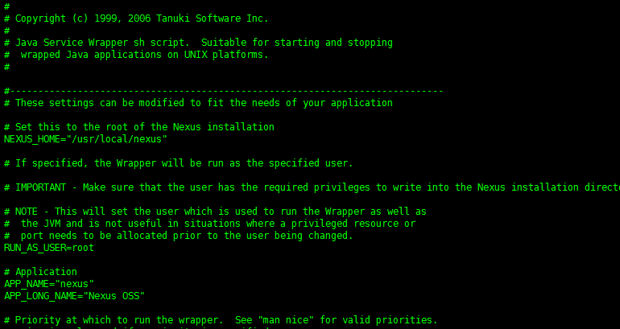
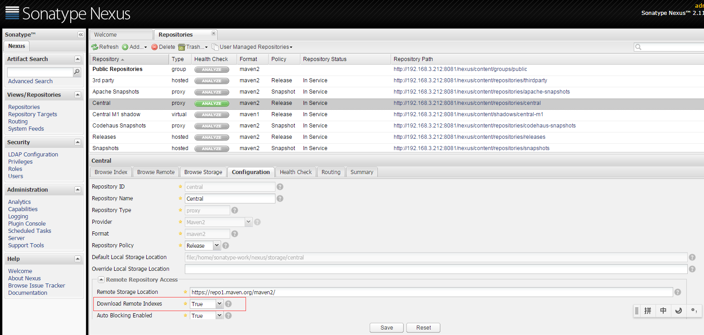
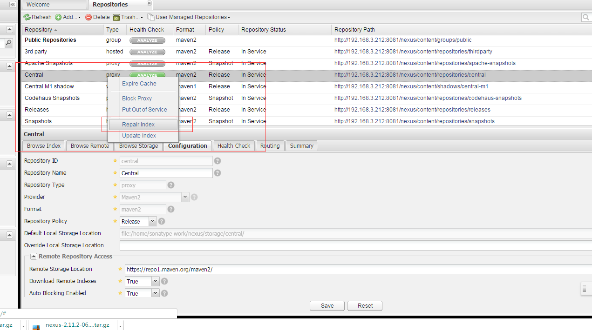
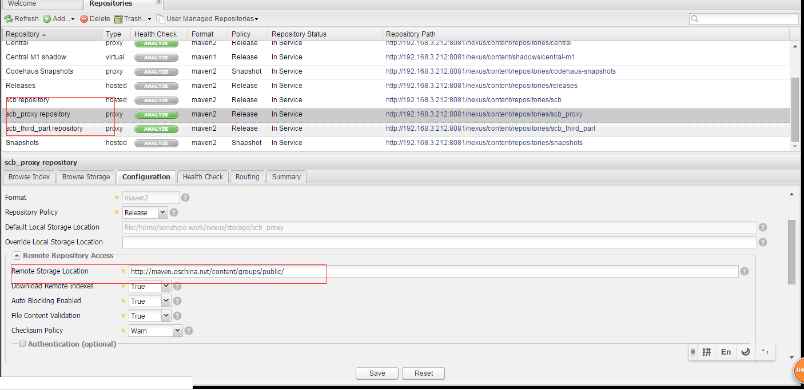
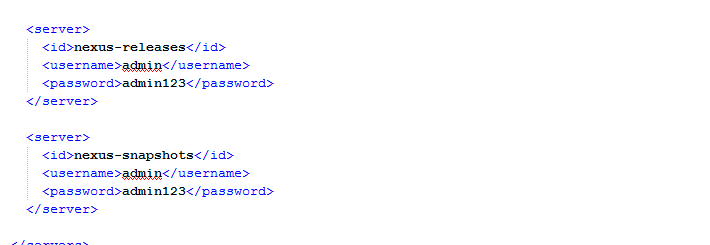
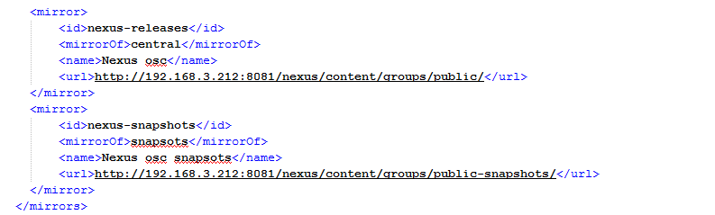
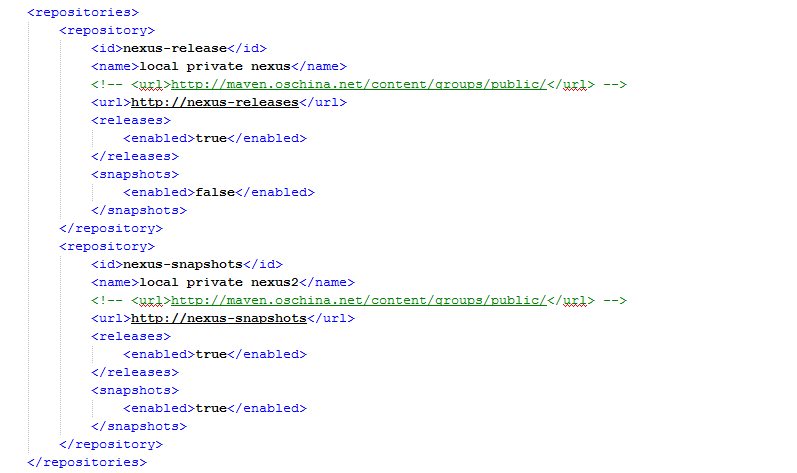

Nexus
使用Maven构建项目的应该都听说过nexus，他能帮你构建一个本地maven仓库，毕竟中央仓库有时可能会连不上；再者，更重要的是他可以帮你以maven的形式管理自己的项目。
下面是简单的在Centos上的安装过程：
1. 安装准备
安装最新版本就行
# yum install java
2. 下载Nexus
nexus 不能yum 安装，因此我们只能下载包进行手动安装。
访问官方网站，进入nexus的下载页面http://www.sonatype.org/nexus/go，然后选择“TGZ”格式的安装包进行下载。
3. 安装Nexus
-
解压文件，移动文件夹
# tar xvzf nexus-2.11.2.-06-bundle.tar.gz
# mv nexus-2.11.2-06 /usr/local/nexus-2.11.2-06
# cd /usr/local/
# ln -s nexus-2.11.2-06 nexus
-
修改nexus.conf配置文件
#vi /usr/local/nexus/conf/nexus.properties
可以修改端口等信息。

-
设置nexus为系统服务并开机自启动
-
复制$NEXUS_HOME/bin/jsw/linux-x86-64/nexus 到/etc/init.d/nexus
# cd /etc/init.d/
# cp /usr/local/nexus/bin/jsw/linux-x86-64/nexus nexus
-
编辑/etc/init.d/nexus文件：
a)修改NEXUS_HOME为绝对路径；
b)设置RUNASUSER=root，即运行nexus的用户

c) > # chkconfig --add nexus
d) > # chkconfig --levels 345 nexus on
-
启动Nexus
# systemctl start nexus
- 防火墙设置
# firewall-cmd --zone=public --add-port=8081/tcp --permanent
# firewall-cmd --reload
4. Neuxs配置
-
开启远程索引
新搭建的neuxs环境只是一个空的仓库，需要手动和远程中心库进行同步，nexus默认是关闭远程索引下载，最重要的一件事情就是开启远程索引下载。登陆nexus系统，默认用户名密码为admin/admin123。
点击左边Administration菜单下面的Repositories，找到右边仓库列表中的三个仓库Apache Snapshots，Codehaus Snapshots和Maven Central，然后再没有仓库的configuration下把Download Remote Indexes修改为true。

然后在Apache Snapshots，Codehaus Snapshots和Maven Central这三个仓库上分别右键，选择Repari Index，这样Nexus就会去下载远程的索引文件。

-
建立宿主仓库
新建公司的内部仓库，步骤为Repositories –> Add –> Hosted Repository，在页面的下半部分输入框中填入Repository ID和Repository Name即可，另外把Deployment Policy设置为Allow Redeploy，点击save就创建完成了。这里我点击添加宿主类型的仓库，在仓库列表的下方会出现新增仓库的配置，如下所示：

-
创建Nexus代理仓库
代理仓库的创建与宿主仓库的创建基本一致，步骤为Repositories –> Add –> Proxy Repository，只有一点不同，需多填一个Remote Storage Location。创建代理仓库的目的是因为中央仓库在国内并不能很好的访问。依次创建main proxy repository 和 thirdpart proxy repository，如下图：

-
创建Nexus仓库组
Nexus 中仓库组的概念是Maven没有的，在Maven看来，不管你是hosted也好，proxy也好，或者group也好，对我都是一样的，我只管根据 groupId，artifactId，version等信息向你要构件。为了方便Maven的配置，Nexus能够将多个仓库，hosted或者 proxy合并成一个group，这样，Maven只需要依赖于一个group，便能使用所有该group包含的仓库的内容。
neuxs中默认自带了一个名为“Public Repositories”组，点击该组可以对他保护的仓库进行调整，把刚才建立的公司内部仓库scb repostiory等加入其中，这样就不需要再在maven中明确指定内部仓库 的地址了。同时创建一个Group ID为public-snapshots、Group Name为Public Snapshots Repositories的组，把Apache Snapshots、Codehaus Snapshots、Snapshots和zfy repostiory等加入其中。
-
maven中设置
使用时，在maven的配置文件settiong.xml中做如下修改：




-
在项目的POM.xml中配置

Maven 安装
# wget http://repos.fedorapeople.org/repos/dchen/apache-maven/epel-apache-maven.repo -O /etc/yum.repos.d/epel-apache-maven.repo
# yum install apache-maven